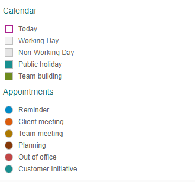

With
this release the UI development toolkit for HTML5 (OpenUI5) is upgraded from
version 1.48 to 1.50.
New Demo Kit (already available as of version 1.48.5)
The Demo Kit app has a new modern
design that is intuitive and can be used on both desktop and mobile
devices.
The global search has been improved and the results are now displayed
in categories. They also include results from the Samples
section, which was not possible with the old Demo Kit since the
Explored app was a decoupled app.
The new Demo Kit contains the following sections:
Landing page with getting started information
Documentation with detailed
information
API Reference with JavaScript
documentation about the framework and the UI controls,
including details for the corresponding properties,
aggregations, associations, events, and methods
Samples, showcasing almost all
controls with ability to download the sample code
Demo Apps, showcasing real-life
scenarios that can easily be downloaded
Disclaimer: The below video is not part of the SAP product documentation. Please read the legal disclaimer for video links before viewing this video.
New Features
The Unicode Common Locale Data Repository (CLDR) has been updated to version
31.
The correct plural category for a given number is now handled by the
locale-specific plural rules offered by CLDR. Different languages use
different plural forms, some languages have only singular and plural, others
require additional forms, for example, dual (two), paucal (few), or
many.
Date interval types are introduced to format two date-related properties from
a model for displaying in the UI. Additionally they are used to parse and
validate the values in UI controls before they are saved back to the model.
The new interval types are:
sap.ui.model.type.DateInterval - a date interval
(without time)
sap.ui.model.type.DateTimeInterval - a date
interval with the exact point of time
sap.ui.model.type.TimeInterval - a time interval
(without date)
The configuration option animationMode replaces
animation, which is now deprecated. The new option
supports several states (full, basic,
minimal, none), which allow controls
to extend support for animations in a more granular way instead of a binary
on/off state. For
more information, see Configuration Options and URL Parameters, Implementing Animation Modes, and the API Reference.
New Controls
sap.m.PlanningCalendarLegend: Enables two types of items to
be displayed in the sap.m.PlanningCalendar as a legend -
types of days (for example, special dates and holidays) and appointments.
For more information, see the API Reference.

Improved Features
OpenUI5
OData V4 Model
The new version of the OpenUI5 OData V4
model introduces an adapter that allows you to use an OData V2 service together
with the OData V4 model in read scenarios. The adapter offers the following
features:
Metadata is converted, including some V2 annotations.
Data in the response is converted.
Literals in the request URI are converted, except for
Edm.DateTime,
Edm.DateTimeOffset, Edm.Time,
and Edm.Binary.
$select, $expand, and
$orderby are handled. Cases that are not
supported by OData V2, like $orderby in
$expand, lead to an error.
All unsupported query options lead to an error.
Caution
Incompatibility Due to a Bug
Fix
The following bug has been reported: If you call the
sap.ui.model.odata.v4.Context#getObject() or the sap.ui.model.odata.v4.Context#requestObject() methods without
a parameter, the expected and documented behavior is that the same result is
returned as if the parameter sPath="" had been specified.
However, due to the bug, the return value wraps the expected output that can
then only be accessed via .value[0], for example
oContext.getObject().value[0].
If you
have used this workaround, your application will break starting with OpenUI5
version 1.44.6.
Solution: If your
application needs to run with both the fixed and unfixed versions of OpenUI5, specify
the sPath="" parameter, for the sPath
parameter. In both cases, you must not use the
workaround with .value[0] any longer.
Restriction
Due to the limited feature scope of this version of the
OpenUI5
OData V4 model, check that all required features are in place before
developing applications. Check the detailed documentation of the features,
as certain parts of a feature may be missing. While we aim to be compatible
with existing controls, some controls might not work due to small
incompatibilities compared to
sap.ui.model.odata.(v2.)ODataModel, or due to missing
features in the model (such as tree binding). This also applies to controls such as
TreeTable and AnalyticalTable, which
are not supported together with the OpenUI5 OData V4
model. The interface for applications has been changed for easier and more
efficient use of the model. For a summary of these changes, see Changes Compared to OData V2 Model.
With the roll-out of Support Assistant in version 1.48, we introduced the
possibility to use the tool in OPA tests to check if there are issues in the
different states of an application. This is possible by enabling the available
OPA extension.
As of this version, there is now a sample of the OPA integration in the Demo Kit.
It demonstrates how you can extend existing OPA tests by making calls to the
assertions in the Support Assistant extension. These assertions may have
different severity, execution scope and subset of rules which are taken into
consideration. The sample also shows how to execute rule checks and how to get
reports.
You can now define the priority of the
DynamicPageTitle areas with the use of the
new primaryArea property. The primary area
shrinks at a slower rate, remaining visible as long as
possible.
With the new content aggregation of the
DynamicPageTitle, you can add content in
the middle area of the title. This content is displayed both in
the expanded and collapsed states of the
DynamicPageHeader.
wrapping: Determines whether text within a label
is wrapped. The default value is false. If set
to false, the label text only uses one line and
any exceeding text is truncated and replaced with an ellipsis.
When you use the Label within a
sap.m.Form the label text is automatically
displayed as wrapped.
displayOnly: Determines whether the label is in
displayOnly mode. Controls in this mode are
non-interactive, non-focusable, cannot be edited, and do not
form part of the tab chain. The displayOnly
property is used in Form controls when they are
in preview mode.
sap.m.MessageStrip now supports a limited set of formatting
tags for the text. The available tags are <a>,
<em>, <strong>, and
<u>. To enable the additional formatting tags,
you have to set the enableFormattedText property to
true. For
more information, see the API Reference and the Samples.
sap.m.Panel has a new parameter for the
expand event that identifies whether the user or the
application is expanding or collapsing the Panel control.
The parameter is called triggeredByInteraction and is
true when the panel is expanded as a result of a user
action. For
more information, see the API Reference and the Samples.
sap.m.PlanningCalendar:
You can now directly navigate to a date with fewer clicks.
With the use of the new builtInViews property the
app developer can now define which of the built-in views are
displayed. For more information, see the API Reference and the
sample.
To save space, the days are now displayed on the same line as the
dates. If you want to display the day names on a separate line, set
the showDayNamesLine property to
true. For more information, see the API Reference and the
sample.
sap.m.ProgressIndicator: You can now set the control in a
display-only state using the new displayOnly property. When
set to true, the control has different visualization and is
not active, not editable, and cannot be focused. For
more information, see the API Reference and the Samples.
sap.m.RatingIndicator: A new state can be set using the
displayOnly property. It enables visually
distinguishable rendering of the RatingIndicator (gray
color), denoting it as non-interactive in forms. All controls in this mode
are also non-focusable and not part of the tab chain. For
more information, see the API Reference and the Sample.
sap.m.semantic.SemanticPage. You can now set the background
color of the page using the new backgroundDesign property.
For more information, see Semantic Page (sap.m) and the API Reference.
sap.m.UploadCollection:
UploadCollectionItem has been extended to display
folders in the UploadCollection control. When you click the
file name or item thumbnail, you can perform custom actions by adding an
event handler to the press event. With the
deletePress event, you can control the deletion of an
item. For
more information, see the API Reference and the sample.
sap.m.Tree: The toggleOpenState event has
been added. For
more information, see the API Reference and the sample.
sap.ui.unified.Calendar: The days of the previous/next month
are no longer visible whenever the sap.ui.unified.Calendar
displays multiple months. For
more information, see the API Reference and the sample.
sap.ui.layout.form.Form and
sap.ui.layout.form.SimpleForm: The samples, including
the descriptions, have been simplified and are now more consistent. For
more information, see the Form and the SimpleForm
samples.
 is not part of the SAP product documentation. Please read the legal disclaimer for video links before viewing this video.
is not part of the SAP product documentation. Please read the legal disclaimer for video links before viewing this video.